RR CAFE


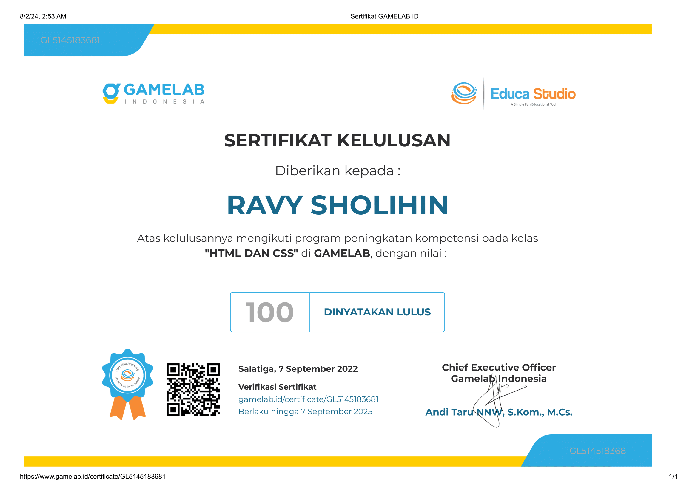


Proyek ini berfokus pada instalasi jaringan LAN, yang menghubungkan sejumlah komputer melalui koneksi fisik, menggunakan kabel dan konektor RJ45. Proses ini melibatkan beberapa tahap penting:
Gambar berikut memperlihatkan beberapa tahapan dalam pengerjaan projek ini :
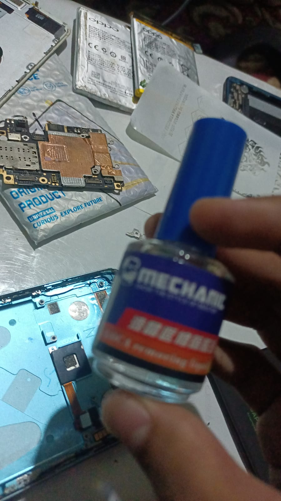
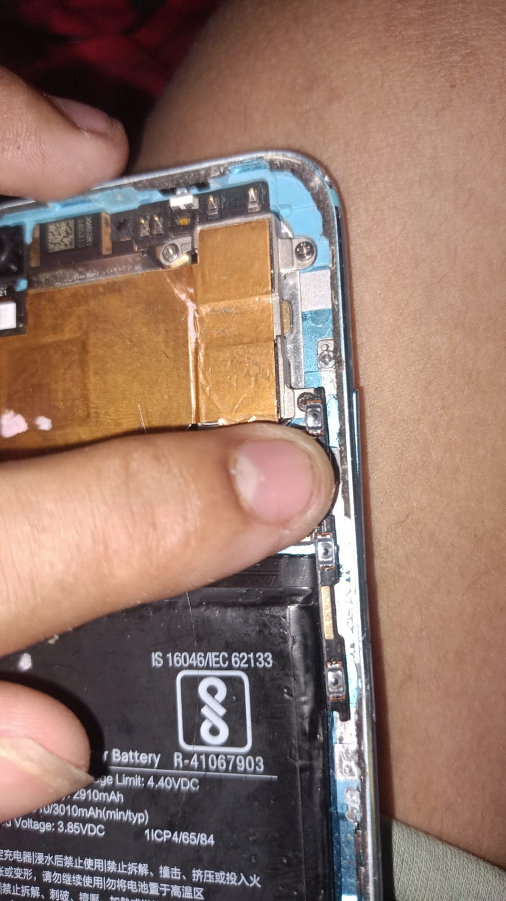
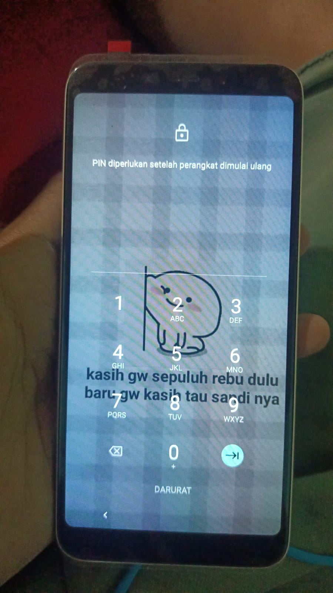

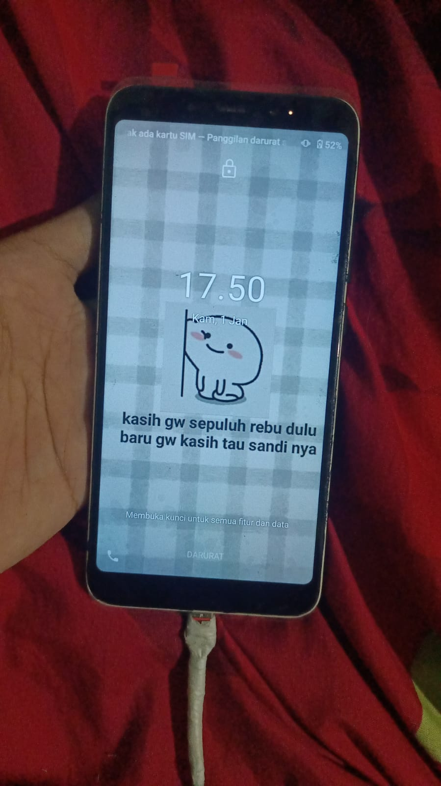

Proyek ini mencakup perbaikan LCD untuk handphone Xiaoni Mi 2A, termasuk penggantian LCD yang rusak dengan yang baru dan pengujian untuk memastikan fungsionalitas penuh setelah perbaikan.
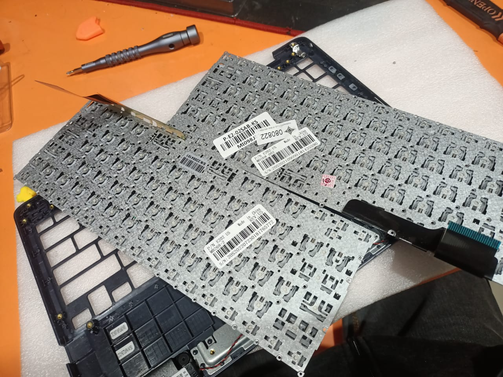
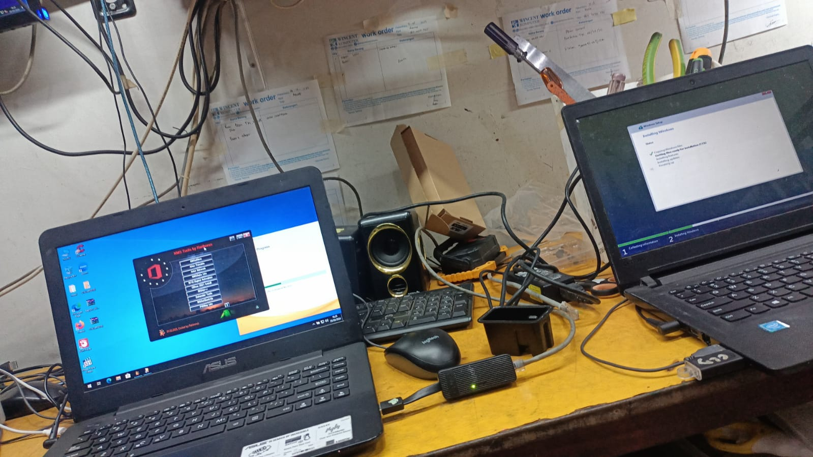
Keyboard pada laptop Asus ini mengalami masalah dengan beberapa huruf yang tidak dapat berfungsi. Proyek ini mencakup penggantian keyboard lama dengan yang baru untuk memastikan semua tombol berfungsi dengan baik. Proses penggantian dilakukan dengan cermat untuk memastikan kualitas dan performa keyboard yang optimal.
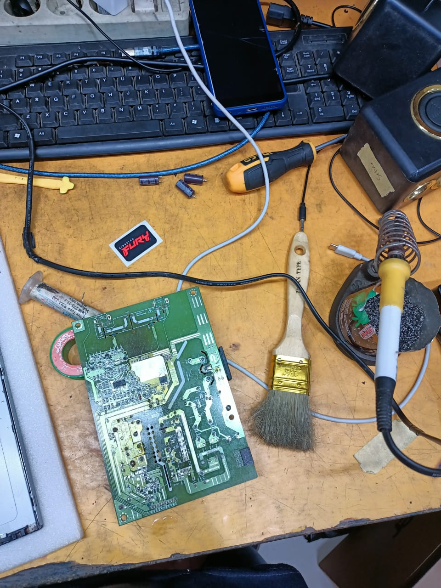

Monitor yang sebelumnya tidak dapat menyala kini sudah diperbaiki dan berfungsi dengan normal. Perbaikan melibatkan diagnosis untuk menentukan masalah, penggantian komponen jika diperlukan, dan pengujian untuk memastikan monitor berfungsi dengan baik setelah perbaikan.
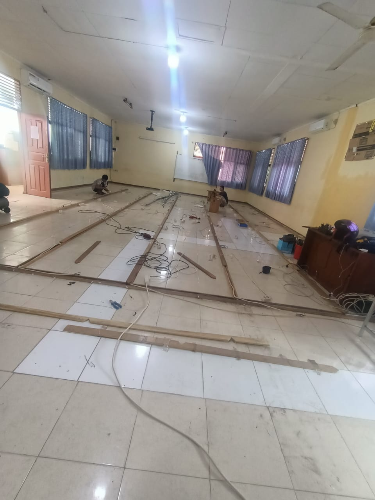
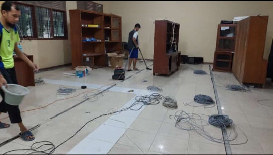

Proyek ini meliputi beberapa tahapan penting:
Proyek ini meliputi beberapa tahapan penting:
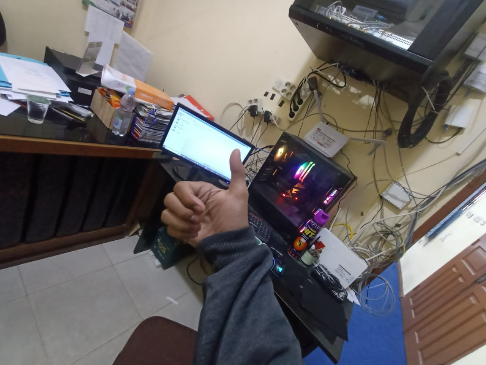

Proyek ini berfokus pada persiapan dan instalasi perangkat lunak Exam Browser di MAN 2 Pekanbaru. Tujuan utamanya adalah memastikan bahwa semua perangkat dan sistem siap untuk pelaksanaan ujian nasional. Proyek ini mencakup beberapa tahapan kunci: